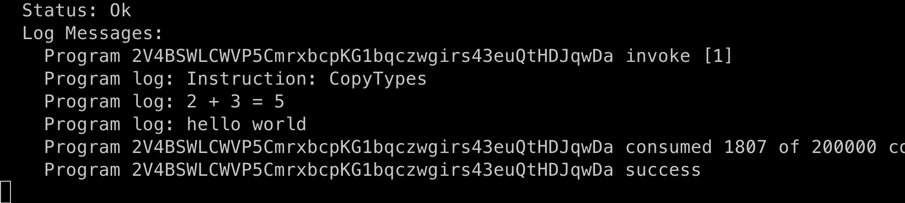
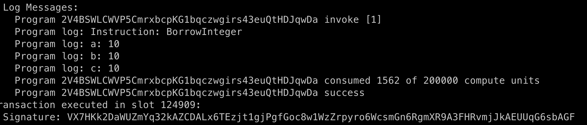

Rust Interesting Syntax
In this session, we will discuss the following syntax:
- &
- mut
- <_>
- unwrap()
- ?
Copy Type vs Non-Copy Type
this is roughly the same concepts to Value Type and Reference Type as Solidity.
- it a type has the certain small size and easy to copy, including:
integers, unsigned, and floats integers, booleans, char. - Non-copy type:
Strings, vectors, structs, etc
create program day_7
anchor new day_7
And update with the following code (be sure to replace with your program id).
use anchor_lang::prelude::*;
declare_id!("2V4BSWLCWVP5CmrxbcpKG1bqczwgirs43euQtHDJqwDa");
pub fn add(a: u32, b: u32) -> u32 {
a + b
}
pub fn concat(s1: String, s2: String) -> String {
format!("{}{}", s1, s2)
}
#[program]
pub mod day_7 {
use super::*;
pub fn copy_types(ctx: Context) -> Result<()> {
let a: u32 = 2;
let b: u32 = 3;
msg!("{} + {} = {}", a, b, add(a, b));
let s1 = String::from("hello");
let s2 = String::from(" world");
// if s1 and s2 are copied, this could be a huge data transfer
// if the strings are very long
msg!("{}{}", s1, s2);
Ok(())
}
}
#[derive(Accounts)]
pub struct Initialize {}
add test file tests/day_7.ts:
import * as anchor from "@coral-xyz/anchor";
import { Program } from "@coral-xyz/anchor";
import { Day7 } from '../target/types/day_7';
describe("day_7", () => {
anchor.setProvider(anchor.AnchorProvider.env());
const program = anchor.workspace.Day7 as Program;
it("should succeed copy types!", async () => {
const tx = await program.methods.copyTypes().rpc();
console.log("You tx signature:", tx);
})
})
Result:

within this demo, both a and b are type of u32, means when pass to function add, only need to copy 4Bytes * 2 are copied, so they are copy type.
but for the two strings, they don' have a fixed size, which means they can be as long as 1GB or 2GB, and if we use copy type on them, the system will need to allocate (1GB or 2GB) *2 for the concatenation, it's crazy, so string type must be non-copy type.
Ownership
the ownership concept is only an issue with (apply to) non-copy-types: Strings, vectors, structs, and the usage is alike the term ofreference in C++, let's dive into the details.
add this function into the code base.
pub fn ownership(ctx: Context) -> Result<()> {
let s1 = String::from("hello");
let res = s1; // res become the owner of value: "hello"
msg!("{:?}", s1); // this line won't compile, cos s1 is no longer the owner of value: "hello"
msg!("{:?}", res);
Ok(())
}
and you will see this error after compilation.

To fix the code above we have two options: use the & operator or clone s1.
Borrowing
To give another variable or function a view of an owned variable, we prepend it with: &.
pub fn ownership(ctx: Context) -> Result<()> {
let s1 = String::from("hello");
let res = &s1;
msg!("s1 under view: {:?}", s1);
msg!("res view s1: {:?}", res);
let s2 = String::from("world");
let res2 = s2;
msg!("res2 owns s2: {:?}", res2);
Ok(())
}
s2 can now view String::from("hello") but not own it, it will holds a reference to the string value in s1, but s1 still holds its original string value.
in rust, we the techitical word of what we are calling view only is : borrowing.
Borrowing (copy-type)
pub fn borrow_integer(ctx: Context) -> Result<()> {
let a = 10;
let b = &a;
let c = a;
msg!("a: {:?}", a);
msg!("b: {:?}", b);
msg!("c: {:?}", c);
Ok(())
}
a, b, c all hold a new copy of value 10, the underlying reason is that the overhead is negligible.

Clone a object
if a var of a non-copy-type is being borrowed, it cannot be reassigned, check the code below.
pub fn clone_test(ctx: Context) -> Result<()> {
let mut s1 = String::from("hello");
// let y = &s1; // comment this line
s1 = s1 + " world";
// msg!("y : {:?}", y); // comment this line
msg!("s1: {:?}", s1);
Ok(())
}
everything works now, then we uncomment two lines above, and the complier will complain:
pub fn clone_test(ctx: Context) -> Result<()> {
let mut s1 = String::from("hello");
let y = &s1;
s1 = s1 + " world";
msg!("y : {:?}", y);
msg!("s1: {:?}", s1);
Ok(())
}
in order to make it work, we can not borrow anymore, instead of we clone.
pub fn clone_test(ctx: Context) -> Result<()> {
let mut s1 = String::from("hello");
// let y = &s1;
let y = s1.clone(); // add this line
s1 = s1 + " world";
msg!("y : {:?}", y);
msg!("s1: {:?}", s1);
Ok(())
}
Now, y has an entire copy of s1, no constraint anymore.

Interesting thing: if we only comment the msg!line and keep the borrowing line, it still work.
pub fn clone_test(ctx: Context) -> Result<()> {
let mut s1 = String::from("hello");
let y = &s1;
s1 = s1 + " world";
// msg!("y : {:?}", y);
msg!("s1: {:?}", s1);
Ok(())
}
Generic types
Rust also supports generic types, eliminating the need to write multiple functions for different types with the same logic.
use anchor_lang::prelude::*;
declare_id!("2V4BSWLCWVP5CmrxbcpKG1bqczwgirs43euQtHDJqwDa");
#[program]
pub mod day_7 {
use super::*;
// The rest...
pub fn generic_type_test(ctx: Context) -> Result<()> {
let my_values1 = MyValues {
foo: 42,
bar: "hello".to_string(),
};
let my_values2 = MyValues {
foo: true,
bar: [1, 2, 3],
};
msg!("my_values1: {:?}", my_values1);
msg!("my_values2: {:?}", my_values2);
Ok(())
}
}
#[derive(Accounts)]
pub struct Initialize {}
// derive the debug trait so we can print the struct to the console
#[derive(Debug)]
struct MyValues {
foo: T,
bar: U,
}
we can reuse this MyValues type on different types.
Options
fn main() {
let v = Vec::from([1,2,3,4,5]);
assert!(v.iter().max() == 5);
}
The code fails to compile with the following error:
6 | assert!(v.iter().max() == 5);
| ^ expected `Option<&{integer}>`, found integer
The output of max() is not an integer due to the corner case that the vector v might be empty.
To handle this corner case, rust returns an Option instead. An Option is an enum which can contain either the expected value, or a special value that indicates “nothing was there.”
option comes together with enum, if the value of a type is empty, rust will return a value of type option, create new program
anchor new day_7_1
update with with the code below.
pub fn option_test(ctx: Context) -> Result<()> {
let v = Vec::from([1, 2, 3, 4, 5]);
// assert!(v.iter().max() == 5); // wrong
assert!(v.iter().max().unwrap() == &5); // correct
Ok(())
}
To turn an Option into the underlying type, we use unwrap(). unwrap() will cause a panic if we received “nothing”, so we should only use it in situations where we want the panic to occur or we are sure we won’t get a empty value.
The deref Operator *
as you may notice, we use &0 instead of 0, cos the return type of unwrap() is a view, so we need to use & ahead.
assert!(v.iter().max().unwrap() == &5); // correct
to convert the view of an integer backward to a regular integer, we can use * operator to deference.
assert!(*v.iter().max().unwrap() == 5); // correct
You can think of * as "undoing" a & without disturbing the original value.
Result Type
An Option is used when we might receive something empty.
An Result is used when we might receive an error. we'v seen this a lot inside our anchor programs.
in day_4, we return either error or ok in this function
if we trace back and we will get it's definition like this:
pub enum Result {
/// Contains the success value
#[lang = "Ok"]
#[stable(feature = "rust1", since = "1.0.0")]
Ok(#[stable(feature = "rust1", since = "1.0.0")] T),
/// Contains the error value
#[lang = "Err"]
#[stable(feature = "rust1", since = "1.0.0")]
Err(#[stable(feature = "rust1", since = "1.0.0")] E),
}
Operator ?
The ? operator can only be ued in functions that return a Resultas it is syntactic sugar for returning either Err or Ok.
- unwrap() : can be used both on Option and Result. (will crash if there is an error occur, be careful).
- ?: can be used only on Result.
let test it, udpate the code:
use anchor_lang::prelude::*;
use borsh::{BorshDeserialize, BorshSerialize};
declare_id!("DjFyT85igx13HFU7uLuqozGaPw6HiQX31PCNLThCCspf");
#[program]
pub mod day_7_1 {
use super::*;
pub fn encode_and_decode(ctx: Context) -> Result<()> {
let init_person: Person = Person {
name: "Alice".to_string(),
age: 30,
};
let encoded_data: Vec = init_person.try_to_vec().unwrap();
msg!("Encoded data: {:?}", encoded_data);
let data: Person = decode(ctx, encoded_data)?;
msg!("Decoded data: {:?}", data);
Ok(())
}
// pub fn decode(ctx: Context, encoded_data: Vec) -> Result { <<--- this won't compile, why?? pub fn decode(ctx: context, encoded_data: Vec) -> Result<(person)> {
let decoded_data: Person = Person::try_from_slice(&encoded_data).unwrap();
Ok(decoded_data)
// Ok(())
}
}
#[derive(Accounts)]
pub struct Initialize {}
#[derive(BorshSerialize, BorshDeserialize, Debug)]
pub struct Person {
name: String,
age: u32,
}
update test file:
import * as anchor from "@coral-xyz/anchor";
import { Program } from "@coral-xyz/anchor";
import { Day71 } from '../target/types/day_7_1';
describe("day_7_1", () => {
anchor.setProvider(anchor.AnchorProvider.env());
const program = anchor.workspace.Day7_1 as Program;
it("should succeed test option!", async () => {
const tx = await program.methods.optionTest().rpc();
console.log("You tx signature:", tx);
})
it("should succeed test ? operator!", async () => {
const tx = await program.methods.encodeAndDecode().rpc();
console.log("You tx signature:", tx);
})
})
run:
Key Takeaways
- ownership only applicable for non-copy-types.
- borrowing (&)is to view a non-copy-type and can use (*) to get the original value.
- Option is a special enum that supports
empty - Result is a special enum that supports
error - unwrap() is to convert an either an Option or an Result back to it's orignal type, and will cause a panic if any error occurs.
- ? is a syntax sugar for unwrap() on Result, not applicable for Option.
Links
- day_7 original article: https://www.rareskills.io/post/rust-weird-syntax
- source code: https://github.com/dukedaily/solana-expert-code/tree/day_7